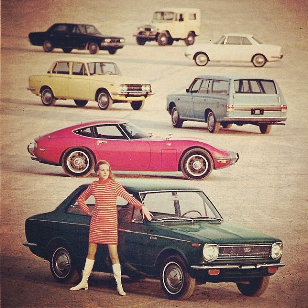
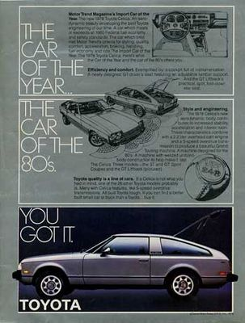

The Toyota Motor Corporation is a Japanese automotive manufacturer headquartered in Toyota, Aichi, Japan.
The production of Toyota automobiles was started in 1933 as a division of Toyoda Automatic Loom Works devoted to the
production of automobiles under the direction of the founder's son, Kiichiro Toyoda.
Its first vehicles were the A1 passenger car and the G1 in 1935. The Toyota Motor Co. was established as an independent company in 1937
Toyoda Standard Sedan AA 1936 Vehicles were originally sold under the name "Toyoda" (トヨダ),
from the family name of the company's founder, Kiichirō Toyoda.

Toyota received its first Japanese Quality Control Award at the start of the 1980s
and began participating in a wide variety of motorsports. During this time period
cars were starting to lose their power factor in favor of more economical cars
due to the oil crisis in the 1970's. In a period of struggle, Toyota created some
of the most iconic and legendary cars that are known in the automotive world. Some of
which are considered sports cars!
During the times in the 80's Toyota focused on created economical and luxurious
vehicles combined into one at a low cost. Innovative new feautres were also designed
into these cars to make them feel as if it were a more expensive car such as a
Ferrari or Lamborghini. These are the types of cars that are most iconic from Toyota and helped created
their sports legacy. These automobiles were the predecessor to the brand known as Lexus. So take
browse through the website and learn about some of these radical cars!!!
